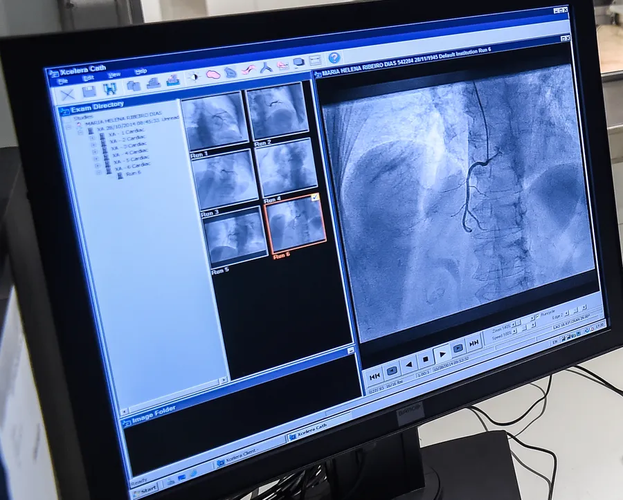
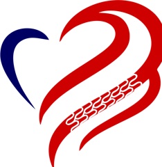
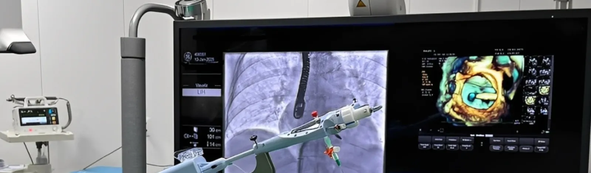
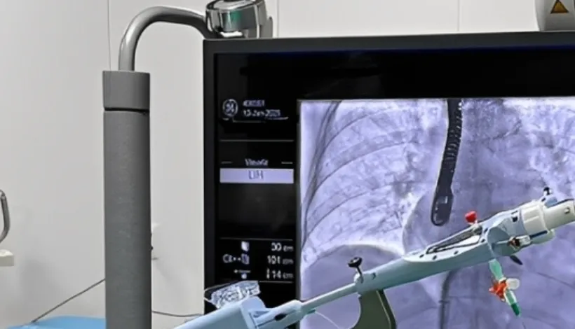
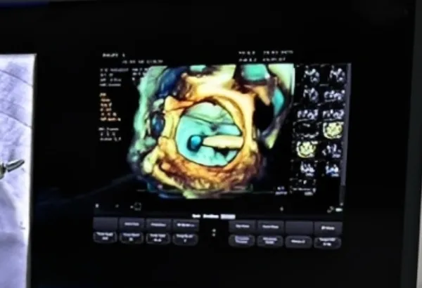
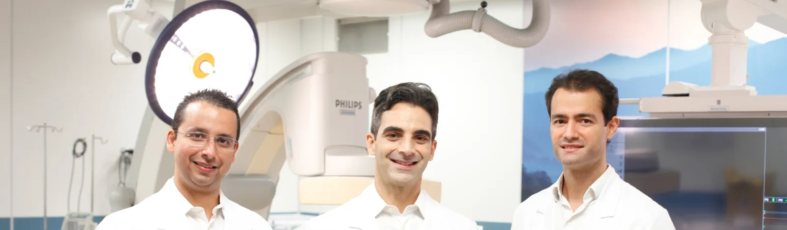
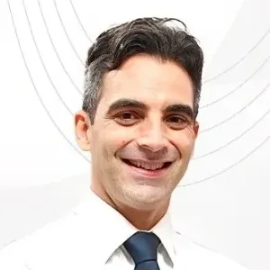
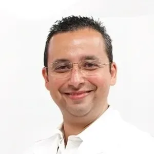
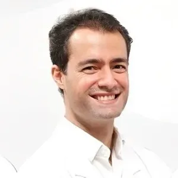
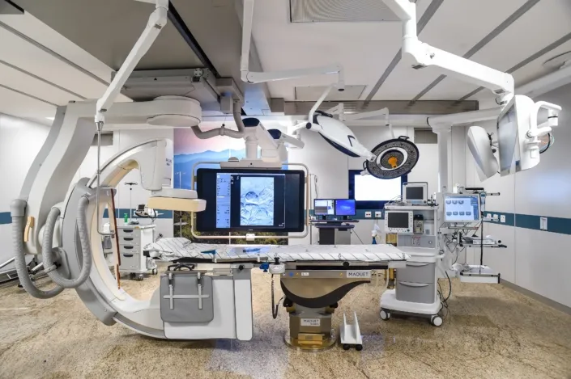

Diagnóstico
Cateterismo cardíaco
O nome técnico é coronariografia. Um cateter fino chega às artérias do coração e o contraste mostra, em imagem, onde há obstrução e de que tamanho.
Coronariografia
Somos a equipe que faz cateterismo, angioplastia, TAVI e outros procedimentos por cateter nos hospitais Mater Dei de Belo Horizonte, Nova Lima e Betim-Contagem. Desde 2014.
Os exames no Mater Dei Contorno são feitos na sala híbrida. Ela tem o equipamento de hemodinâmica e a estrutura de um centro cirúrgico. Se o procedimento precisar virar cirurgia, o paciente continua ali, sem transferência.
A diferença entre as duas curvas diz se a obstrução prejudica o fluxo de sangue. É isso que decide, no mesmo exame, se o stent é necessário.
Com a tecnologia Clarity, a dose de radiação recebida pelo paciente cai até 73%. O recurso StentBoost mostra com nitidez um stent já implantado.
Material desenvolvido na Alemanha que facilita a esterilização do ambiente e reduz o risco de infecção.
A iluminação e a música da sala podem ser ajustadas. Parece detalhe, mas ajuda muito quem chega nervoso para o exame.
Preferimos a via radial, no punho, porque o risco de sangramento é menor do que pela virilha.

Fazemos 28 procedimentos diferentes, de exames diagnósticos a tratamentos que antes exigiam abrir o tórax. Estes três são os que mais nos procuram.

O nome técnico é coronariografia. Um cateter fino chega às artérias do coração e o contraste mostra, em imagem, onde há obstrução e de que tamanho.
Coronariografia
Um balão abre a artéria entupida e um stent, uma pequena malha de metal, fica no lugar para manter o sangue passando. Muitas vezes é feita no mesmo procedimento do cateterismo.
Angioplastia coronária
Troca da valva aórtica por cateter, sem cirurgia de peito aberto. A nova valva é levada até o coração por uma artéria e encaixada dentro da valva doente.
Implante transcateter de valva aórticaExame que mapeia as artérias do coração e mostra onde estão as obstruções.
Imagens de altíssima resolução feitas de dentro da artéria. Servem para planejar a angioplastia e conferir se o stent ficou bem expandido.
Mede a pressão antes e depois da obstrução para saber se ela realmente reduz o fluxo de sangue e precisa de tratamento.
Avaliam a microcirculação do coração, o espasmo das artérias e as pontes miocárdicas, causas de dor no peito que o cateterismo comum não mostra.
Medida direta da pressão dentro das câmaras do coração.
Mostra como a circulação dos pulmões responde a medicamentos. Ajuda a definir o tratamento da hipertensão pulmonar.
Mede fluxos e pressões em alterações do coração presentes desde o nascimento.
Exame com contraste dos vasos do pulmão, para diagnosticar coágulos, embolia e malformações.
Imagem da aorta, a maior artéria do corpo, para identificar aneurismas, placas e outras alterações.
Retirada de fragmentos muito pequenos do músculo do coração para diagnosticar miocardite, rejeição de transplante e doenças raras.
Desobstrução das artérias do coração com balão e implante de stent.
Uma broca muito fina desgasta placas de cálcio duras demais para o balão. Depois disso, o stent consegue ser implantado com segurança.
Troca da valva aórtica por cateter, sem cirurgia de peito aberto.
Implante de uma nova valva por cateter dentro de uma prótese mitral biológica que se desgastou.
Um balão é inflado dentro da valva estreitada para abri-la.
Reparo da valva mitral por cateter, para reduzir o refluxo de sangue dentro do coração.
Correção por cateter da valva tricúspide que não fecha direito.
Fechamento por cateter de pequenos vazamentos de sangue ao redor de uma prótese de valva.
Fechamento por cateter de uma pequena cavidade do coração onde se formam coágulos. Previne AVC em pacientes com fibrilação atrial.
Fechamento por cateter de orifícios nas paredes internas do coração, sem cirurgia.
Correções por cateter de alterações presentes desde o nascimento, como atriosseptostomia e angioplastia do canal arterial.
Redução controlada do excesso de músculo que obstrui a saída de sangue do coração.
Desobstrução por cateter das artérias dos pulmões em tromboembolismo pulmonar agudo ou crônico.
Desobstrução das artérias que levam sangue aos rins e aos órgãos do abdome.
Tratamento de artérias entupidas nas pernas e nos braços. Alivia a dor ao caminhar.
Um tubo reforçado é colocado por cateter dentro da artéria dilatada para evitar que ela se rompa.
Redução do fluxo de sangue para a próstata aumentada, tratando o crescimento benigno sem cirurgia convencional.
Bloqueio dos vasos que alimentam o mioma. Diminui o sangramento e preserva o útero.
Recebeu um pedido de exame e quer entender o que vai ser feito? Pode perguntar.
Um dos médicos da equipe fala com você sobre o preparo, os cuidados e o que vai acontecer na sala.
Exames eletivos podem ser marcados à noite e nos fins de semana, combinando com você e com o seu cardiologista.
Na sala híbrida, pelo punho sempre que possível. Se houver dúvida sobre a necessidade de stent, a FFR é medida ali mesmo.
Você sai com as orientações de cuidado em casa, e o seu cardiologista recebe o retorno da equipe.
A equipe se formou em 2014 com médicos que já trabalhavam com hemodinâmica em outros hospitais de Belo Horizonte. Hoje também formamos os residentes de cardiologia do Mater Dei.


Coordenador do Serviço de Cardiologia Intervencionista da Rede Mater Dei
Mestre e doutor pela Faculdade de Medicina da UFMG. Coordenou a hemodinâmica do Hospital das Clínicas da UFMG de 2008 a 2024. Revisor de revistas como Heart e Catheterization and Cardiovascular Interventions.

Coordenador do Serviço de Cardiologia Intervencionista da Rede Mater Dei
Mestre e doutor pela Faculdade de Medicina da UFMG, onde é pesquisador. Preceptor das residências de cardiologia do HC-UFMG e do Mater Dei. Especialista em hemodinâmica pela SBHCI.

Hemodinamicista
Formado pela UNIFAC Barbacena. Especialização em cardiologia e em hemodinâmica e cardiologia intervencionista no Hospital Felício Rocho. Membro da Sociedade Brasileira de Cardiologia.
Trechos da pesquisa de satisfação que o paciente responde depois do procedimento.

Em cada etapa, pude sentir o cuidado e a dedicação de todos. A estrutura é excelente, mas, acima de tudo, o que mais me marcou foi o atendimento humano e o carinho de cada profissional.
Me deram todo o apoio necessário desde o primeiro momento, quando eu não tinha conhecimento sobre a progressão do meu problema, até a agilidade no apoio ao plano de saúde, procedimento e recuperação.
Geórgia e Simone são excelentes profissionais. Me ajudaram muito nas ligações que eu precisei fazer.
O paciente continua sendo seu. A gente conversa sobre o caso antes do procedimento e dá o retorno depois.
Quando a medida define a conduta, fazemos FFR, iFR ou RFR durante o cateterismo diagnóstico, sem segundo procedimento.
Imagem intravascular para planejar a angioplastia e otimizar o resultado do stent.
Sempre que a anatomia permite. Menos sangramento e mobilização mais cedo.
Se houver necessidade de conversão cirúrgica, não há transporte entre salas.
Até 73% menos dose de radiação e realce do stent previamente implantado.
Exames eletivos à noite e nos fins de semana, e contato direto com o médico que vai fazer o procedimento.
Fale direto com a equipe pelo WhatsApp.
Av. do Contorno, 9000, Barro Preto, Belo Horizonte. Onde fica a sala híbrida.
Unidade construída já com o serviço de hemodinâmica.
Belo Horizonte, região Centro-Sul.
Serviço de hemodinâmica inaugurado em 2024.
O cateterismo é o exame: mostra onde estão as obstruções nas artérias do coração. A angioplastia é o tratamento: abre a artéria com um balão e, na maioria das vezes, deixa um stent no lugar. Quando o cateterismo encontra uma obstrução que precisa ser tratada, os dois podem acontecer no mesmo procedimento.
Sempre que possível, pelo punho (artéria radial). Essa via tem menos risco de sangramento. Em alguns casos, como na TAVI, a virilha é necessária por causa do tamanho do material.
Sim. Exames eletivos podem ser agendados fora do horário comercial, combinando com você e com o seu cardiologista.
O angiógrafo da sala híbrida é um Philips Allura FlexMove FD20 com a tecnologia Clarity, que reduz em até 73% a dose de radiação recebida pelo paciente.
Um dos médicos da equipe, os mesmos que fazem o procedimento. Mande uma mensagem pelo WhatsApp e a gente combina o melhor horário para conversar.
Mande uma mensagem. A equipe responde e explica os próximos passos.
WhatsApp (31) 97136-4667